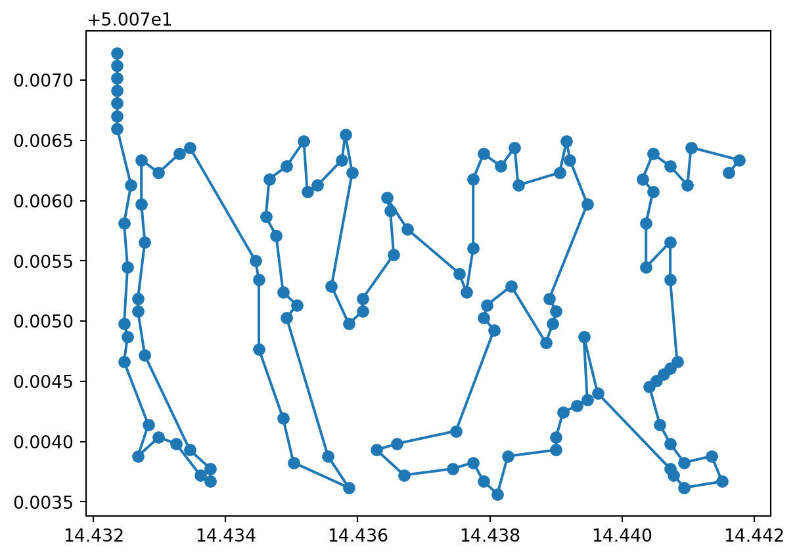

# Create an svg of the word 'test'import svgwritedwg = svgwrite.Drawing('test.svg', profile='tiny', size=('60mm', '23mm'))# Add the word 'test' in blackdwg.add(dwg.text('test', insert=(0, 80), fill='black', font_size=100))dwg.save()# Convert the svg to a pngimport cairosvgcairosvg.svg2png(url='test.svg', write_to='test.png')# Display the pngfrom IPython.display import ImageImage(filename='test.png')# Convert the png to a geojsonimport pyvipsimport numpy as npimport jsonimport pyprojimport shapely.geometry# Load the pngimage = pyvips.Image.new_from_file('test.png', access='sequential')# Convert the png to a numpy arrayimage = np.array(image)# Get the width and height of the imagewidth = image.shape[1]height = image.shape[0]# Get the x and y coordinates of the pixelsx, y = np.meshgrid(np.arange(width), np.arange(height))# Get the red, green and blue values of the pixelsr = image[:, :, 0]g = image[:, :, 1]b = image[:, :, 2]# Get the alpha values of the pixelsa = image[:, :, 3]# Get the x and y coordinates of the pixels that are not transparentx = x[a >0]y = y[a >0]# Center the x and y coordinates on Pragueprague = (14.4378, 50.0755)# Get the ratio of the width and height of the imageratio = width / height# The final height will be 500 metersfinal_height =500final_width = final_height * ratio# Show the width and heightprint(final_width, final_height)# Meters to degreesmeters_to_degrees =1/111111# Degree rangedegree_height = final_height * meters_to_degreesdegree_width = final_width * meters_to_degrees# Convert the x and y coordinates of the pixels to lat and lonlat = np.interp(y, [0, height], [prague[1] + degree_height /2, prague[1] - degree_height /2])lon = np.interp(x, [0, width], [prague[0] - degree_width /2, prague[0] + degree_width /2])# Decimate the image by a factor of 10lat = lat[::10]lon = lon[::10]# Convert the lat and lon to a geojsonpoints = []for i inrange(len(lat)): points.append(shapely.geometry.Point(lon[i], lat[i]))feature = shapely.geometry.MultiPoint(points)# Display the geojsonimport foliumm = folium.Map(location=[prague[1], prague[0]], zoom_start=15)folium.GeoJson(feature).add_to(m)m
1313.9534883720928 500
Make this Notebook Trusted to load map: File -> Trust Notebook
All credit to Copilot! Good lord it did a good job there.
Make it a linestring
Code
# Create a linestring from the points by finding the nearest neighbour for each pointfrom scipy.spatial import distance_matrix# Get the distance matrixraw_points = np.array([lon, lat]).Td_matrix = distance_matrix(raw_points, raw_points)# In order to avoid the diagonal, set the zeros to infinityd_matrix[d_matrix ==0] = np.inf# Starting with the first point, find the nearest neighbour that is not already in the linestringpoints = []current_point =0for _ inrange(len(lon)): points.append(shapely.geometry.Point(lon[current_point], lat[current_point]))# Set the current point to infinity so that it is not chosen again d_matrix[:, current_point] = np.inf# Find the nearest neighbour current_point = np.argmin(d_matrix[current_point, :])# Create the linestringlinestring = shapely.geometry.LineString(points)# Display the linestringm = folium.Map(location=[prague[1], prague[0]], zoom_start=15)folium.GeoJson(linestring).add_to(m)m
Make this Notebook Trusted to load map: File -> Trust Notebook
Okay, that time I had to get my hands dirty and figure out some of the vector algebra myself.
This is exactly what the future of human-AI looks like (at least until they destroy all humans)– this is immensely easier than doing it alone would be, however it is still important for me to know what the robot is doing and be able to dive into the details every now and then to improve it when it gets stuck. That MSc. in Physics is not looking useless quite yet!
Simplify the linestring
Code
import numpy as np# Calculate the euclidian distance in n-space of the route r traversing cities c, ending at the path start.# path_distance = lambda r,c: np.sum([np.linalg.norm(c[r[p]]-c[r[p-1]]) for p in range(len(r))])path_distance =lambda r,c: np.sum([np.linalg.norm(c[r[p+1]]-c[r[p]]) for p inrange(len(r)-1)])# Reverse the order of all elements from element i to element k in array r.two_opt_swap =lambda r,i,k: np.concatenate((r[0:i],r[k:-len(r)+i-1:-1],r[k+1:len(r)]))def two_opt(cities, improvement_threshold): # 2-opt Algorithm adapted from https://en.wikipedia.org/wiki/2-opt route = np.arange(cities.shape[0]) # Make an array of row numbers corresponding to cities. improvement_factor =1# Initialize the improvement factor. best_distance = path_distance(route, cities) # Calculate the distance of the initial path.while improvement_factor > improvement_threshold: # If the route is still improving, keep going! distance_to_beat = best_distance # Record the distance at the beginning of the loop.for swap_first inrange(1,len(route)-2): # From each city except the first and last,for swap_last inrange(swap_first+1,len(route)): # to each of the cities following, new_route = two_opt_swap(route,swap_first,swap_last) # try reversing the order of these cities new_distance = path_distance(new_route,cities) # and check the total distance with this modification.if new_distance < best_distance: # If the path distance is an improvement, route = new_route # make this the accepted best route best_distance = new_distance # and update the distance corresponding to this route. improvement_factor =1- best_distance/distance_to_beat # Calculate how much the route has improved.return route # When the route is no longer improving substantially, stop searching and return the route.lat = lat[::4]lon = lon[::4]cities = np.array([lon, lat]).Tprint(cities.shape)route = two_opt(cities, 0.01)import matplotlib.pyplot as plt# Reorder the cities matrix by route order in a new matrix for plotting.# new_cities_order = np.concatenate((np.array([cities[route[i]] for i in range(len(route))]),np.array([cities[0]])))new_cities_order = np.array([cities[route[i]] for i inrange(len(route))])# Plot the cities.plt.scatter(cities[:,0],cities[:,1])# Plot the path.plt.plot(new_cities_order[:,0],new_cities_order[:,1])plt.show()
(119, 2)

Okay, a bunch of fancy math tricks from SO12 didn’t help. But I’m starting to suspect I am seriously overcomplicating this.
---# Genericauthor: "Fergus Fettes"updated: todaydate-format: "MMM D, YYYY"title-block-banner: pinktitle-block-banner-color: white# date-format: isojupyter: python3toc: true # Table of Contentsreference-location: marginformat: html: code-tools: true code-fold: true citations-hover: true footnotes-hover: truefreeze: true# Specifictitle: GIS Map Experimentsdate: 2022-10-30T11:37:33+01:00---# Attempt 1 to make running routes from text[Main](/Projects/GIS.qmd)## Convert Text to GPS Coords```{python}# Create an svg of the word 'test'import svgwritedwg = svgwrite.Drawing('test.svg', profile='tiny', size=('60mm', '23mm'))# Add the word 'test' in blackdwg.add(dwg.text('test', insert=(0, 80), fill='black', font_size=100))dwg.save()# Convert the svg to a pngimport cairosvgcairosvg.svg2png(url='test.svg', write_to='test.png')# Display the pngfrom IPython.display import ImageImage(filename='test.png')# Convert the png to a geojsonimport pyvipsimport numpy as npimport jsonimport pyprojimport shapely.geometry# Load the pngimage = pyvips.Image.new_from_file('test.png', access='sequential')# Convert the png to a numpy arrayimage = np.array(image)# Get the width and height of the imagewidth = image.shape[1]height = image.shape[0]# Get the x and y coordinates of the pixelsx, y = np.meshgrid(np.arange(width), np.arange(height))# Get the red, green and blue values of the pixelsr = image[:, :, 0]g = image[:, :, 1]b = image[:, :, 2]# Get the alpha values of the pixelsa = image[:, :, 3]# Get the x and y coordinates of the pixels that are not transparentx = x[a >0]y = y[a >0]# Center the x and y coordinates on Pragueprague = (14.4378, 50.0755)# Get the ratio of the width and height of the imageratio = width / height# The final height will be 500 metersfinal_height =500final_width = final_height * ratio# Show the width and heightprint(final_width, final_height)# Meters to degreesmeters_to_degrees =1/111111# Degree rangedegree_height = final_height * meters_to_degreesdegree_width = final_width * meters_to_degrees# Convert the x and y coordinates of the pixels to lat and lonlat = np.interp(y, [0, height], [prague[1] + degree_height /2, prague[1] - degree_height /2])lon = np.interp(x, [0, width], [prague[0] - degree_width /2, prague[0] + degree_width /2])# Decimate the image by a factor of 10lat = lat[::10]lon = lon[::10]# Convert the lat and lon to a geojsonpoints = []for i inrange(len(lat)): points.append(shapely.geometry.Point(lon[i], lat[i]))feature = shapely.geometry.MultiPoint(points)# Display the geojsonimport foliumm = folium.Map(location=[prague[1], prague[0]], zoom_start=15)folium.GeoJson(feature).add_to(m)m```All credit to Copilot! Good lord it did a good job there.## Make it a linestring```{python}# Create a linestring from the points by finding the nearest neighbour for each pointfrom scipy.spatial import distance_matrix# Get the distance matrixraw_points = np.array([lon, lat]).Td_matrix = distance_matrix(raw_points, raw_points)# In order to avoid the diagonal, set the zeros to infinityd_matrix[d_matrix ==0] = np.inf# Starting with the first point, find the nearest neighbour that is not already in the linestringpoints = []current_point =0for _ inrange(len(lon)): points.append(shapely.geometry.Point(lon[current_point], lat[current_point]))# Set the current point to infinity so that it is not chosen again d_matrix[:, current_point] = np.inf# Find the nearest neighbour current_point = np.argmin(d_matrix[current_point, :])# Create the linestringlinestring = shapely.geometry.LineString(points)# Display the linestringm = folium.Map(location=[prague[1], prague[0]], zoom_start=15)folium.GeoJson(linestring).add_to(m)m```Okay, that time I had to get my hands dirty and figure out some of the vector algebra myself.This is exactly what the future of human-AI looks like (at least until they [destroy all humans](https://www.lesswrong.com/posts/uMQ3cqWDPHhjtiesc/agi-ruin-a-list-of-lethalities))-- this is immensely easier than doing it alone would be, however it is still important for me to know what the robot is doing and be able to dive into the details every now and then to improve it when it gets stuck. That MSc. in Physics is not looking useless quite yet!## Simplify the linestring```{python}import numpy as np# Calculate the euclidian distance in n-space of the route r traversing cities c, ending at the path start.# path_distance = lambda r,c: np.sum([np.linalg.norm(c[r[p]]-c[r[p-1]]) for p in range(len(r))])path_distance =lambda r,c: np.sum([np.linalg.norm(c[r[p+1]]-c[r[p]]) for p inrange(len(r)-1)])# Reverse the order of all elements from element i to element k in array r.two_opt_swap =lambda r,i,k: np.concatenate((r[0:i],r[k:-len(r)+i-1:-1],r[k+1:len(r)]))def two_opt(cities, improvement_threshold): # 2-opt Algorithm adapted from https://en.wikipedia.org/wiki/2-opt route = np.arange(cities.shape[0]) # Make an array of row numbers corresponding to cities. improvement_factor =1# Initialize the improvement factor. best_distance = path_distance(route, cities) # Calculate the distance of the initial path.while improvement_factor > improvement_threshold: # If the route is still improving, keep going! distance_to_beat = best_distance # Record the distance at the beginning of the loop.for swap_first inrange(1,len(route)-2): # From each city except the first and last,for swap_last inrange(swap_first+1,len(route)): # to each of the cities following, new_route = two_opt_swap(route,swap_first,swap_last) # try reversing the order of these cities new_distance = path_distance(new_route,cities) # and check the total distance with this modification.if new_distance < best_distance: # If the path distance is an improvement, route = new_route # make this the accepted best route best_distance = new_distance # and update the distance corresponding to this route. improvement_factor =1- best_distance/distance_to_beat # Calculate how much the route has improved.return route # When the route is no longer improving substantially, stop searching and return the route.lat = lat[::4]lon = lon[::4]cities = np.array([lon, lat]).Tprint(cities.shape)route = two_opt(cities, 0.01)import matplotlib.pyplot as plt# Reorder the cities matrix by route order in a new matrix for plotting.# new_cities_order = np.concatenate((np.array([cities[route[i]] for i in range(len(route))]),np.array([cities[0]])))new_cities_order = np.array([cities[route[i]] for i inrange(len(route))])# Plot the cities.plt.scatter(cities[:,0],cities[:,1])# Plot the path.plt.plot(new_cities_order[:,0],new_cities_order[:,1])plt.show()```Okay, a bunch of fancy math tricks from SO[^1][^2] didn't help. But I'm starting to suspect I am seriously overcomplicating this.[^1]: https://stackoverflow.com/questions/25585401/travelling-salesman-in-scipy[^2]: https://gis.stackexchange.com/questions/420940/shortest-path-touching-all-pointsLet me see.